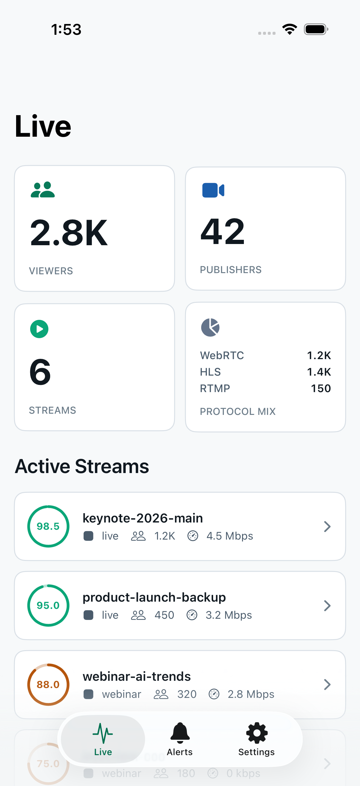
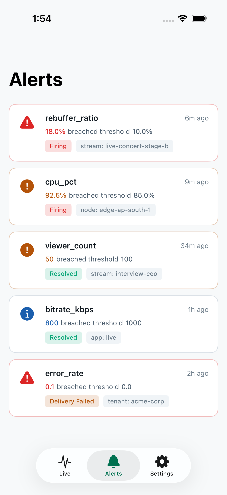
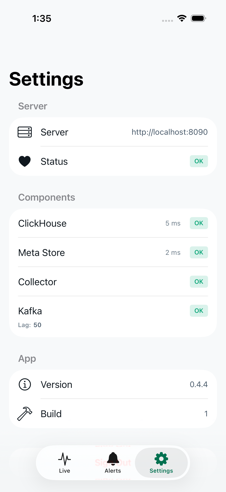

The app
What you will be looking at



About This Beta
What you are testing
Live dashboard
Total viewers, publishers, and protocol breakdown (HLS, WebRTC, RTMP) update in real time.
Stream list
See active streams with viewer counts, health scores, and ingest bitrate.
Alerts
View firing and resolved alerts. Push notifications are not yet implemented.
Fleet status
For cluster deployments: see all discovered AMS nodes with CPU and memory.
Beta Scope
What the app does not do yet
This is an early beta. The following features are planned but not yet implemented:
- Push notifications for alerts
- Offline mode (the app requires an active connection)
- Multi-server support (one server at a time)
- Historical charts (use the web UI for time-range queries)
- Write operations (creating alerts, managing tokens)
Please do not report these as bugs. They are known scope limitations for this beta.
Data Accuracy
What you might notice
These are known limitations of the Pulse platform that affect the data the app displays. They are not app bugs.
- HLS viewer count is higher than actual: AMS reports HLS viewers as a sliding window of segment requests, not unique sessions. A count of 45 might represent 5 real viewers. This is AMS platform behavior.
- FPS always shows 0: Frame rate is not exposed in the AMS REST API for streams polled via REST. The health score compensates for this.
- Fleet CPU/memory requires REST polling or Kafka: For standalone AMS, node resource gauges require the REST system-resources endpoint (AMS 3.x) or a Kafka broker connection.
-
SRT streams appear as RTMP: AMS 3.0.3 reports SRT-ingested streams
with
publishType="RTMP", so the protocol breakdown may miscount.
For the full list, see docs/known-limitations.md.
Before You Start
What you need
iPhone or iPad
Running iOS 17.0 or later. The app requires iOS 17 minimum.
A running Pulse server
The iOS app is a monitoring client. It connects to a Pulse server that you operate. If you do not have a Pulse deployment, see the setup documentation.
An API token
The app authenticates with a bearer token. Generate one in
Settings → API Tokens on your Pulse web UI.
A read-only token (scope: read) is sufficient.
Network access to your server
Your iPhone must be able to reach your Pulse server over the network. For deployments behind a firewall, you may need VPN or public HTTPS access.
Installation
Join via TestFlight
1. Install TestFlight
TestFlight is Apple's official beta testing app. Download it from the App Store if you do not already have it.
2. Open the public link
TestFlight link not yet available
The public TestFlight link will appear here once the operator completes App Store Connect setup. In the meantime, request a manual invitation below.
3. Install Pulse
TestFlight opens and shows the Pulse app. Tap Install. The app appears on your home screen with an orange beta dot.
4. Connect to your server
Open Pulse, enter your server URL (e.g., https://pulse.example.com),
then enter your API token. The dashboard loads when the connection succeeds.
No Public Link Yet?
Request an invitation
The TestFlight public link is created by the operator after enrolling in the Apple Developer Program and completing the App Store Connect setup. If the link above shows a placeholder or 404, the setup is not yet complete.
To request a manual invitation:
- Email: Contact support@beyondkaira.com with the subject "Pulse iOS Beta" and include your Apple ID email address.
- GitHub: Open an issue at github.com/aytekXR/ams-pulse/issues with the title "Request iOS beta access" and include your Apple ID email.
The operator adds your Apple ID as a TestFlight tester. You receive an email from Apple with a link to accept the invitation.
Have a Mac?
Run in the iOS Simulator
If you have a Mac with Xcode installed, you can run the app in the iOS Simulator today — no Apple Developer account, no TestFlight invitation required.
This does NOT work on a physical iPhone. Most testers do not have a Mac; this is a fallback for developers and reviewers, not a replacement for TestFlight.
1. Download the simulator build
Go to the ios workflow
in GitHub Actions. Find a recent successful run on the main branch,
scroll to Artifacts, and download Pulse-Simulator.zip.
2. Unzip and install
Unzip the download. Open Simulator (Xcode → Open Developer Tool → Simulator).
Drag Pulse.app onto the Simulator window, or run:
xcrun simctl install booted Pulse.app
3. Launch and connect
Tap the Pulse icon in the Simulator. Enter your server URL and API token to connect to your Pulse deployment.
Help Us Improve
Sending feedback
In-app (recommended)
Take a screenshot while using Pulse. TestFlight prompts you to submit feedback. The screenshot and device logs are attached automatically.
Shake to report
Shake your device while in the app. TestFlight opens a feedback dialog. Describe what happened and tap Submit.
GitHub issues
For bugs or feature requests with detailed reproduction steps, open an issue.